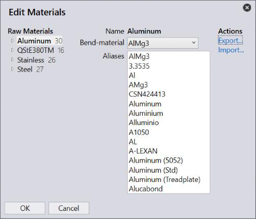
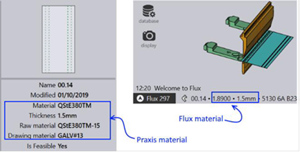

 Like the CAM page mapping, you can edit material aliases and bend material (material used in Flux Bend) using the Map --> Materials command to map materials to the alternate names.
This command brings up the material editor dialog as shown in the image above. This can be used to
● Assign a bend-material to the selected material.
● Edit alternate name (aliases) of a material.
● Edit alternate names of a raw materials.
The factory materials defined in Praxis may be different from the known materials defined in Flux. Praxis assigns the mapped bend material to the part before sending it to Flux Engine for bend CAM. The bend material combo displayed in this UI displays all materials defined in Flux. Select one appropriate for selected material from the left.
Enter an alias name of the material, one-per-line, in the Aliases textbox. When importing new parts, these aliases are used to map the external material names like ERP, CAD systems etc. to the one defined in Praxis. This is a many-to-one map where multiple aliases can be assigned to a single Praxis material. While an alias name must be used just once. The UI enforces this rule if the alias is used again for some other material.
Like material-aliases, the raw-material aliases allow to provide alternate names for material + thicknesses. These short names later can be used in a spreadsheet to provide a single entry for both material + thickness. For instance, In the image above alias GALV#13 for the raw material QStE380TM-15 is used in spreadsheet below to assign the part-material:
PartName, Quantity, DueDate, Priority, Material 00.13,6,08/21/2016,Normal,GALV#13 00.14,13,08/21/2016,Normal,GALV#13 00.16,3,08/21/2016,Normal,GALV#13
The imported part is assigned with the target raw material and the alias is displayed as the Drawing material part field. This part-field is used to capture the material/raw material alias which was used to resolve the actual material or raw material of the part. As displayed in the right below – the bend material is assigned to part bending solution.

The Export… and Import… commands can be used to assign mappings in batch. The exported file is a simple key-value CSV file. The section below describes the key-value schema with examples. (Note that there is not header row in the exported CSV).
Aluminium, AlMg3 QStE380TM, 1.8900 Stainless, 1.4301
AlMg3, Aluminium 3.3535, Aluminium Al, Aluminium
ALUM#10, Aluminium-05 AL07, Aluminium-07 Al07X, Aluminium-07